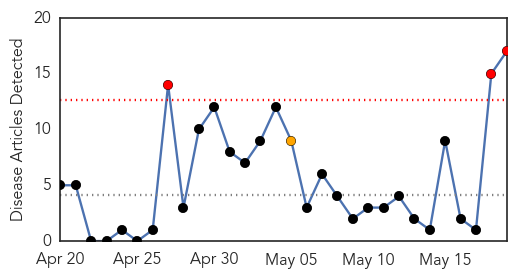

30 Day Trends
Web: 3 alerts, 1 warnings
Twitter: 0 alerts, 0 warnings
Top Articles:
- 0.994
- Kenya confirms 65 deaths from cholera outbreak
- 0.985
- Kenya confirms 65 deaths from cholera outbreak
- 0.984
- Talks to seek ways of fighting cholera - Kenya
- 0.970
- Burundian crisis triggers emerging humanitarian emergency in Tanzania
- 0.958
- Burundian crisis triggers emerging humanitarian emergency in Tanzania
- 0.957
- Burundian crisis triggers emerging humanitarian emergency in Tanzania
- 0.937
- Burundi Crisis Triggers Humanitarian Emergency In Tanzania -- WHO
- 0.925
- Refugees die of cholera in Tanzania camp as thousands more arrive
- 0.920
- Tanzania confirms cholera at Burundian refugee camp
- 0.906
- Burundian crisis triggers emerging humanitarian emergency in Tanzania - United Republic of Tanzania
- 0.865
- WHO: Humanitarian crisis unfolding among Burundi refugees
- 0.860
- United Republic of Tanzania: Burundian crisis triggers emerging humanitarian emergency in Tanzania
- 0.843
- 5 Years After Haiti's Earthquake, Where Did The $13.5 Billion Go?
- 0.768
- Refugees spark crisis in Tanzania
- 0.734
- WHO: Humanitarian crisis unfolding among Burundi refugees
- 0.534
- UN provides assistance as diarrhoea outbreak leaves seven Burundi refugees dead at Tanzania camp
- 0.516
- UNHCR warns of catastrophe as cholera hits Burundian refugees in Tanzania - Xinhua
Top Tweets:
-
No tweets found for May 19, 2015
Web/News Articles
Tweets

Article Locations